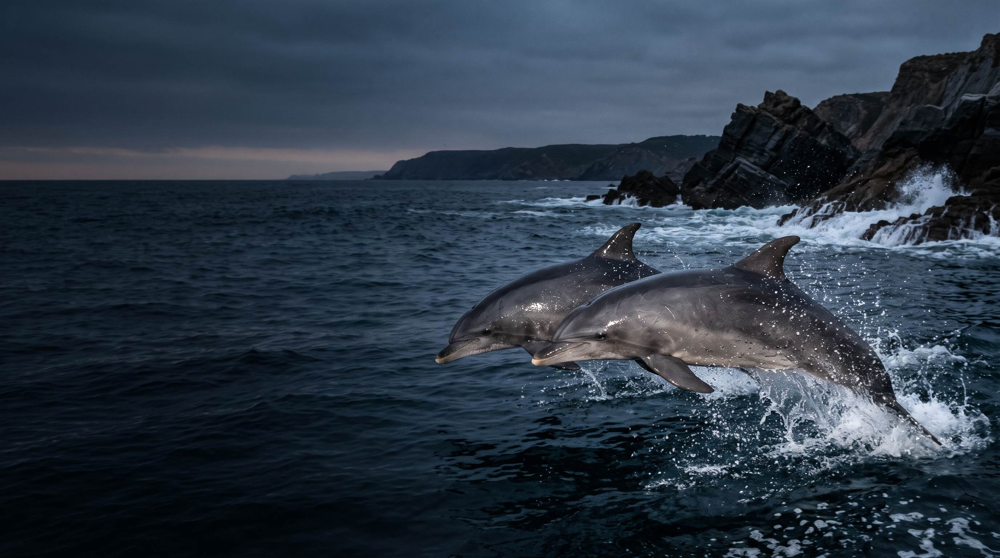

Alentejo Eventos
Kuratierte Plattform für Veranstaltungen, Kultur und Begegnungen im Alentejo – übersichtlich, direkt und unabhängig von überladenen sozialen Netzwerken.
Web-Plattform
Event-Katalog
Alentejo

Eigene Web-Applikationen, interaktive Plattformen und spezialisierte Werkzeuge – entwickelt an der Südwestküste Portugals mit Fokus auf klaren Nutzen und schlanke Architektur.
Kuratierte Plattform für Veranstaltungen, Kultur und Begegnungen im Alentejo – übersichtlich, direkt und unabhängig von überladenen sozialen Netzwerken.
Praktischer Begleiter für Portugal mit Fokus auf Flussbäder, Küsten- und Wetterlage sowie aktuelle Umwelt- und Gefahrenhinweise auf einen Blick.
Mehrsprachiges Ermittlungsspiel zwischen digitaler Oberfläche und haptischem Spielmaterial – angesiedelt in atmosphärischen Schauplätzen Südportugals.